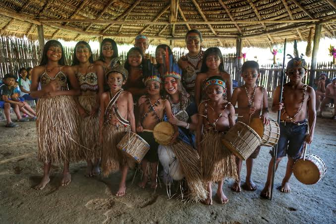

01PUEBLO KICHWA · PASTAZA
Cotococha
Cotococha conserva la riqueza cultural del pueblo kichwa a través de sus tradiciones, artesanías, gastronomía y conocimientos ancestrales. Su identidad refleja el profundo vínculo entre sus habitantes y la naturaleza amazónica, convirtiéndola en un espacio para conocer, valorar y respetar el patrimonio vivo de Pastaza.
Costumbres
Artesanías, tradiciones y saberes ancestrales que mantienen viva la identidad kichwa y su relación con la naturaleza.
Vestimenta
La vestimenta tradicional kichwa expresa identidad y pertenencia cultural. Sus prendas y adornos pueden variar según la ocasión y las costumbres de la comunidad.
Gastronomía
La gastronomía amazónica y sus conocimientos culinarios forman parte de la herencia transmitida entre generaciones.